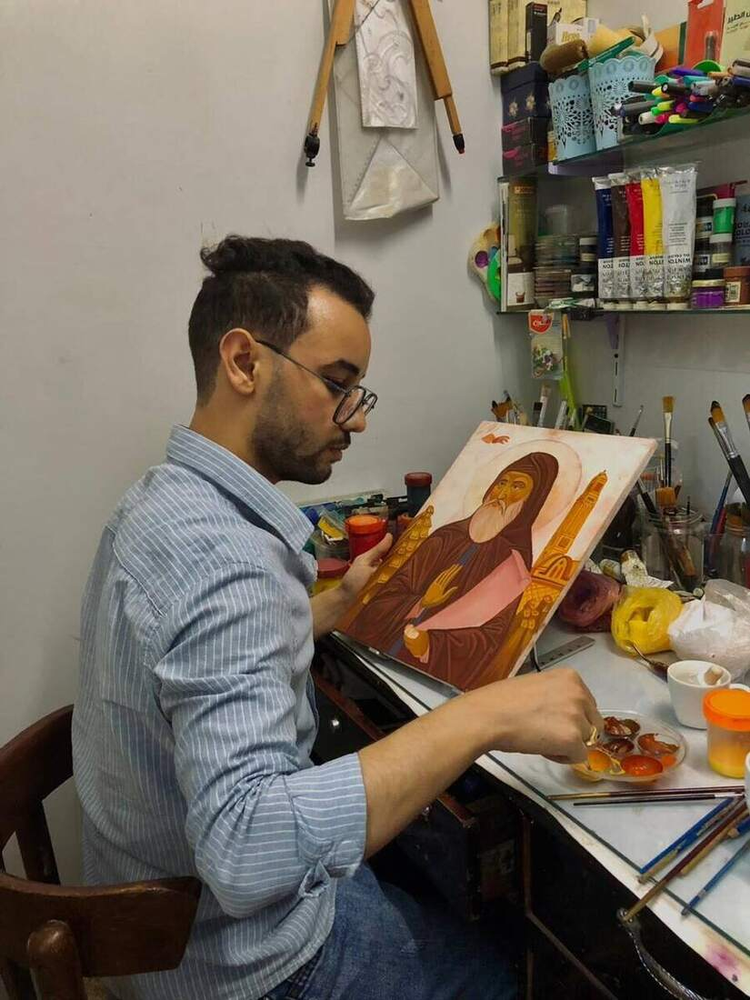

Hany
Magdy
Iconographer
Available for new projects

Iconographer
Hany Magdy
Sacred Byzantine and Coptic icons painted in egg tempera, acrylic and gold leaf, plus classical studies, portraits and printmaking. Fine Arts graduate, Minia University. Based in Minya and Cairo.
Learn moreFeatured work
Icons and sacred art